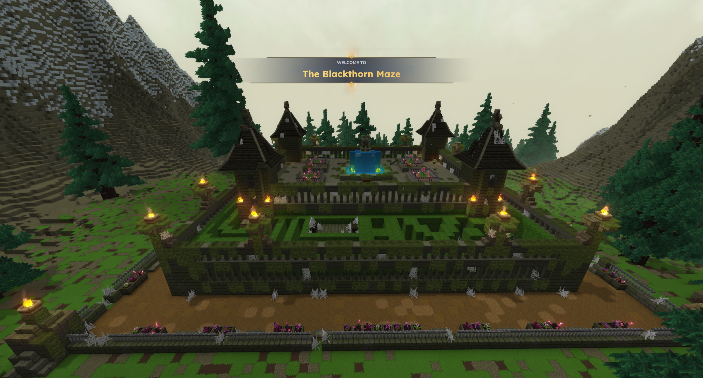
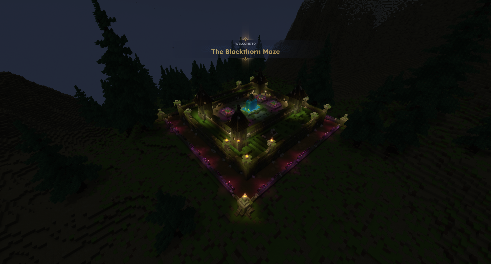
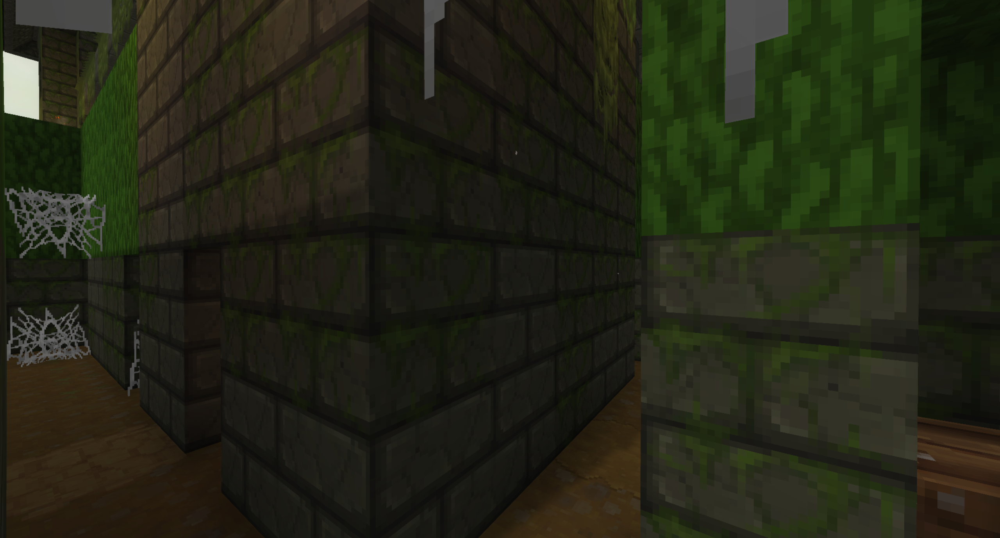
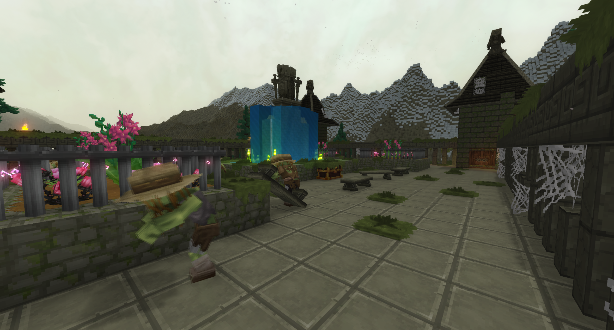
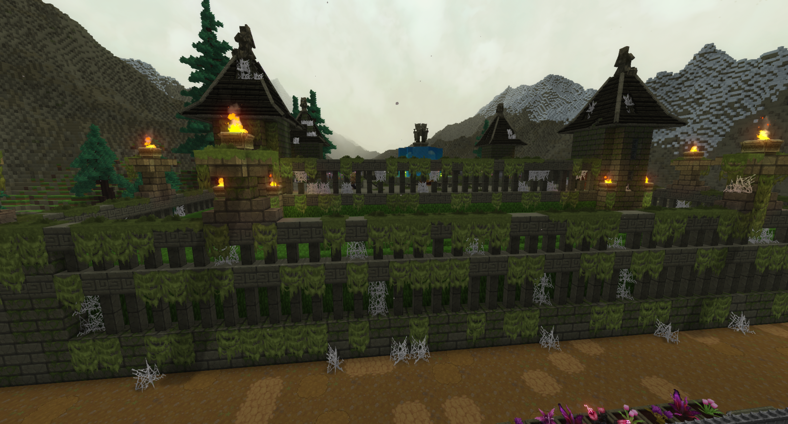
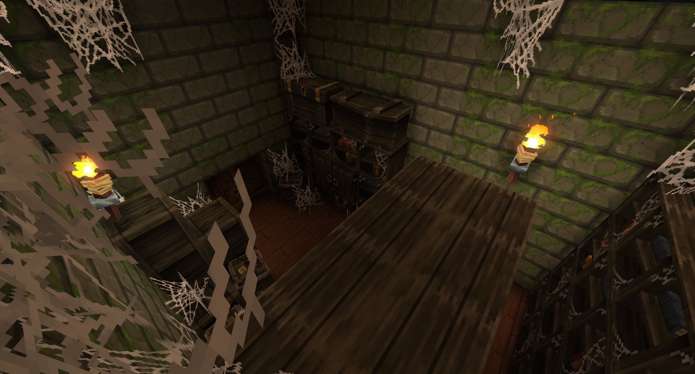

Tucked deep within the shadow of the rugged southern mountain ridges lies The Blackthorn Maze—a secluded, moss-draped labyrinth built from ancient dark stone and overgrown hedge-walls. Enclosed by tall pine forests and towering peaks, this isolated sanctuary conceals forgotten treasures, a glowing central fountain, and hidden rooms within its tight, web-strung corridors.
The Blackthorn Maze

| Location Information | |
|---|---|
| Coordinates | X: 617, Z: 787 |
| Area Type | Rural Ruins |
| Mob Threat | Very High |
| Bandit Threat | High |
| Number of Chests | 19 |
| Water Source | Yes |
| Clean Water Source | No |
| Fireplace | No |
| Chef's Stove | No |
| Workbench | No |
| Available Loot | ||
|---|---|---|
| 🍎 Food | ✗ | |
| 🥛 Civilian | Tier 1 | ✗ | |
| ✂️ Civilian | Tier 2 | ✗ | |
| 🛠️ Civilian | Tier 3 | 4 | |
| 🛡️ Military | Tier 1 | ✗ | |
| ⚔️ Military | Tier 2 | 4 | |
| 🏹 Military | Tier 3 | 11 | |
| 🌟 Legendary | ✗ | |
Lore
Tucked deep within the shadow of the rugged southern mountain ridges lies The Blackthorn Maze—a secluded, moss-draped labyrinth built from ancient dark stone and overgrown hedge-walls. Enclosed by tall pine forests and towering peaks, this isolated sanctuary conceals forgotten treasures, a glowing central fountain, and hidden rooms within its tight, web-strung corridors.
The Mountain Labyrinth
From above, The Blackthorn Maze presents a neatly structured, nearly symmetrical footprint. High stone walls, choked with thick green moss and sprawling vines, form the foundation of its winding pathways. Rising above the dense green hedges are four dark timber watchtowers anchored at the corners, standing guard over the entire maze. Torch-lit braziers atop stone pillars cast a warm glow across the outer dirt pathways and surrounding flower beds.
The Elevated Central Plaza
Navigating the maze is no simple feat; tight turns, dead ends, and thick cobwebs choke the stone-paved passages below. However, those who solve the winding puzzle are rewarded upon ascending to the open area built directly above the maze floor:
- The Luminescent Fountain: Standing as the centerpiece of the upper plaza, a towering structure cascades with brilliant blue water and glowing cyan flora, illuminating the stone benches and surrounding flower boxes.
- Hidden Archives & Vaults: Secret doors tucked away within the lower stone corridors open into dust-covered study chambers. Filled with ancient bookshelves, heavy wooden crates, and web-covered storage chests, these hidden alcoves hold lost knowledge and provisions.
- The Wandering Outcasts: The upper courtyard is not entirely deserted. Undead still linger near the fountain and perimeter walkways, keeping watch over the secret haven.
The Isolation of the Ridges
Cut off from the surrounding lowlands by dramatic mountain slopes and dense evergreen forest, the location of Blackthorn was strategically chosen for total secrecy. By night, lit only by the soft glow of flower-bed lights, torch braziers, and the central luminescent waters, the maze transforms into a serene yet mysterious landmark hidden deep in the southern peaks.
Enclosed by stone, guarded by four towers, and hidden behind walls of thorn and vine, the secrets of Blackthorn belong only to those who can find the way through.
Gallery




